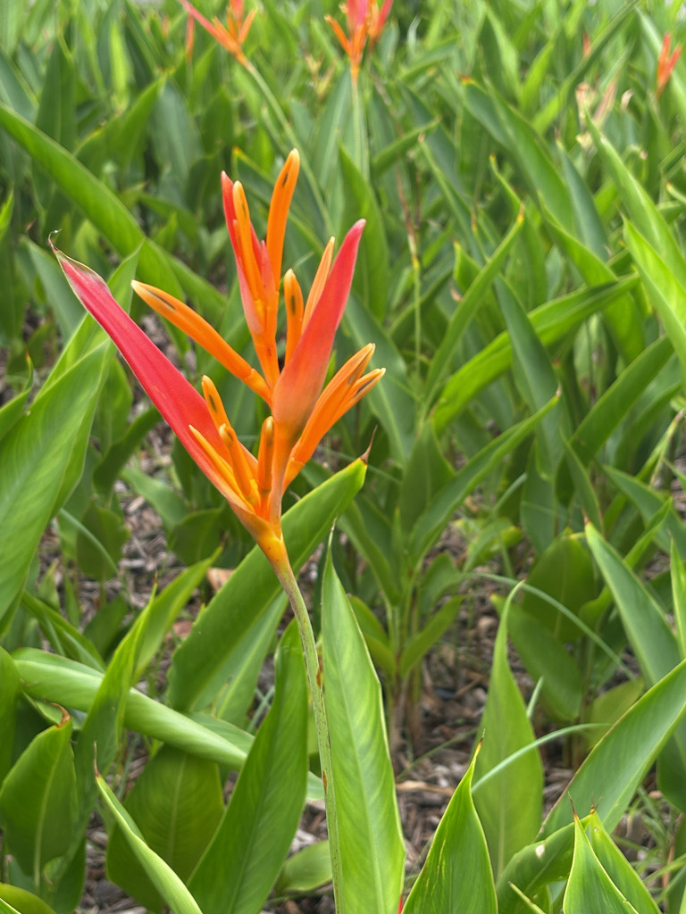

- The showy orange bracts are not flowers — they are modified leaves. The actual flowers are the small structures tucked inside them. The bracts last for weeks after the true flowers have finished.
- The curved bract shape is a near-exact match for a hummingbird bill. Plant and bird have been shaping each other through coevolution. In its native range, hummingbirds become territorial over specific heliconia plants, defending them as a private nectar supply.
- The mass planting outside the office front door is ringed by white riprap. Cut back or weed-invaded it can look unkempt. In full standing bloom with orange bracts emerging from massive green leaves, it is one of the more striking spots in the park.
- The rhizomes spread. This is a feature and a maintenance task simultaneously.
Non-native. Native to the Caribbean and northern South America — French Guiana, Guyana, Suriname, Venezuela, Colombia, Bolivia, Brazil, Panama, and Trinidad and Tobago. Member of Heliconiaceae, closely related to bananas and birds-of-paradise. The species name psittacorum means of the parrots in Latin.
- The mass planting of Heliconia sits outside the front door of the office, ringed by white riprap, and is one of the most prominent plantings in the park by location alone. It earns that prominence on its own schedule. Cut back or overtaken by wedelia it can look disheveled, and the grumbling is understandable.
- When the pseudostems are standing tall and the orange bracts are out en masse, the display is worth the patience.
- The plant spreads by rhizome — steadily and in all directions. It presses against the rock barrier, into the adjoining canna planting, and occasionally into paths and other beds. Staff and student volunteers dig out the escapees, recover the rhizomes, and replant them back into the mass. High school students working at the park have become well-acquainted with heliconia rhizomes specifically.
- Non-native canna rhizomes also turn up in the heliconia bed and get relocated in the other direction.
- When both are in bloom simultaneously — orange heliconia and red cannas — the combined display draws people in. The two are close enough in form and color that visitors sometimes need a moment to distinguish them. The comparison, once made, is a good plant identification lesson.
- The territorial hummingbird behavior this plant triggers in its native range also plays out here. Ruby-throated Hummingbirds passing through on migration will stake out a productive heliconia and defend it against other visitors.
Hummingbirds are the primary pollinators and the relationship is highly specialized. The curved bract and flower tube geometry matches hummingbird bill curvature closely — accessible to a hovering bird, largely inaccessible to insects. In its native range individual hummingbirds become territorial over specific plants, visiting daily and defending them against competitors.
In Florida, Ruby-throated Hummingbirds on fall migration use the flowers as a nectar source. The bracts hold their color and structure for weeks, providing an extended feeding window.
The dense clumping foliage provides cover and nesting structure for small birds and lizards at the base of the planting.
The orange structures are modified leaves called bracts, arranged alternately on the flower stalk. Waxy, waterproof, and long-lasting — weeks after the true flowers inside have finished, the bracts remain colorful. Excellent as cut flowers.
Small, inconspicuous, tucked inside the bracts. Cream to yellow with darker tips. Produce abundant nectar.
Large, lanceolate, bright deep green with a prominent central vein. Resemble banana leaves. Can shred along the veins in strong wind.
The plant spreads by underground rhizomes extending outward from the planting over time. Thinner than canna rhizomes — a useful distinction when digging both out of the same bed.
Division of rhizomes. Each section with a growing point establishes a new plant.
The orange boat-shaped bracts on an upright stalk above large banana-like leaves are unmistakable. Look inside a bract for the small true flowers. Where heliconia and canna grow together, compare the bract structure against the open canna flower clusters, and check rhizome thickness to tell them apart.
This is an ornamental — the dark blue fruits aren't eaten — but it's harmless, with no known toxicity to people, dogs, or cats.


- © Sofia Linares (CC-BY-NC), via iNaturalist
- © Ruby Meador (CC-BY-NC), via iNaturalist
- © Denise Sosa (CC-BY-NC), via iNaturalist